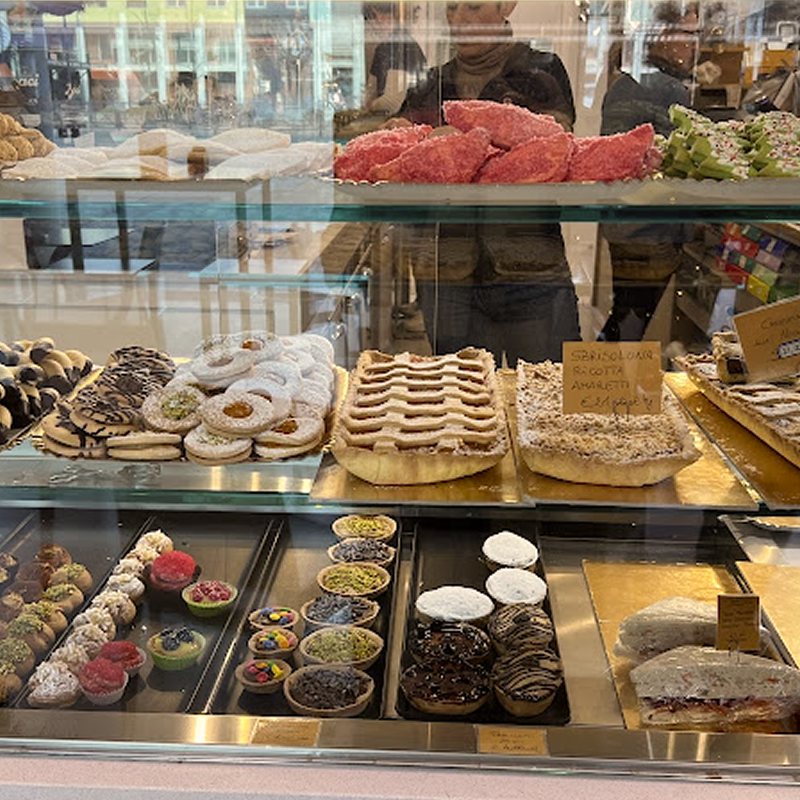
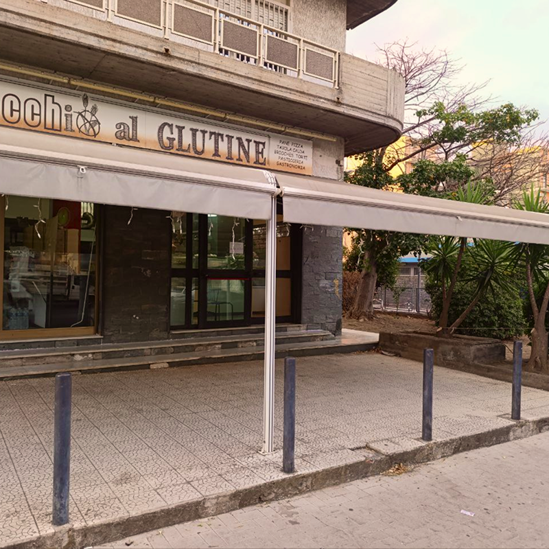
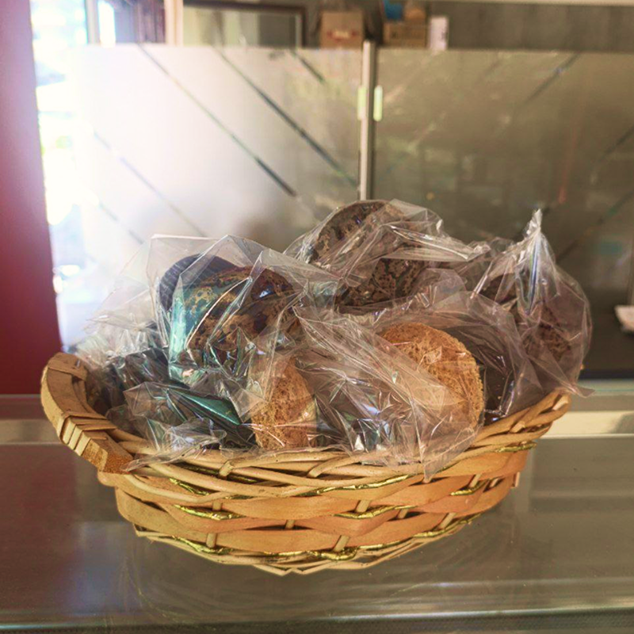

panificio


Occhio al glutine
Descrizione
Il panificio Occhio al glutine è famoso per le schiacciate senza glutine, tipico piatto della tradizione catanese. Al suo interno si possono trovare oltre al pane una vasta gamma di prodotti di pasticceria: torte, pasticini, dolci tipici catanesi come il babbà e prodotti di rosticceria. Il personale è cordiale e soddisfa le richieste dei clienti per aggiungere o togliere ingrendienti.



Informazioni


Indirizzo
Viale Mario Rapisardi, 384, Catania
Telefono
+39 347 881 8226
Budget
5-10 € / persona
Zona
Zona Viale Alto, vicino il Bar Diaz
Orari
Dom
Chiuso
Lun, Mar, Mer, Gio, Ven, Sab
7:30-20:30
Parcheggio
Assente
Servizi igienici
Assente
AiC
Possibilità di spendere i buoni pasto per la celiachia